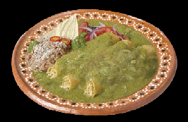

MOLE VERDE
PROCEDIMIENTO
1.-Lavar y desinfectar los vegetales y las hojas.
2.-Cocer el pollo en suficiente agua, cebolla, ajo y sal. Una vez que esté cocido se retira, desgrasar el caldo.Reservar.
3.-Asar los tomates y reservar
4.Licuar las especias, el tomate y el chile serrano desvenado y despepitado. freír en manteca, sazonar y dejar a fuego medio durante 10 min. Aprox.
5.-Disolver la masa de maíz en un poco de agua fría y reservar.
6.-Agregar el pollo y el caldo y una vez que suelta el hervor se añade la masa disuelta poco a poco hasta que espese
7.-Licuar las hierbas y añadir a la mole.

| CANTIDAD |
INGREDIENTES |
| 2 PZAS |
PIERNA CON MUSLO |
| 1 PZA |
CEBOLLA |
| 5 DIENTES |
AJO |
| 5 G |
CLAVOS |
| 10 G |
SAL |
| 5 G |
PIMIENTA NEGRA |
| 500 G |
TOMATE |
| 3 PZAS |
CHILE SERRANO |
| 100 G |
MANTECA DE CERDO |
| 100 ML |
MASA DE MAIZ |
| 5 RAMAS |
EPAZOTE |
| 5 RAMAS |
PEREJIL |
| 1 PZA |
HOJA SANTA |